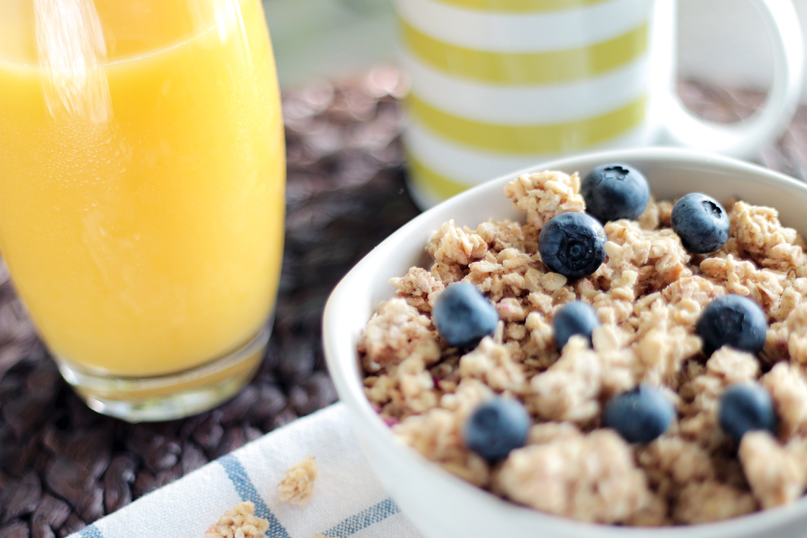
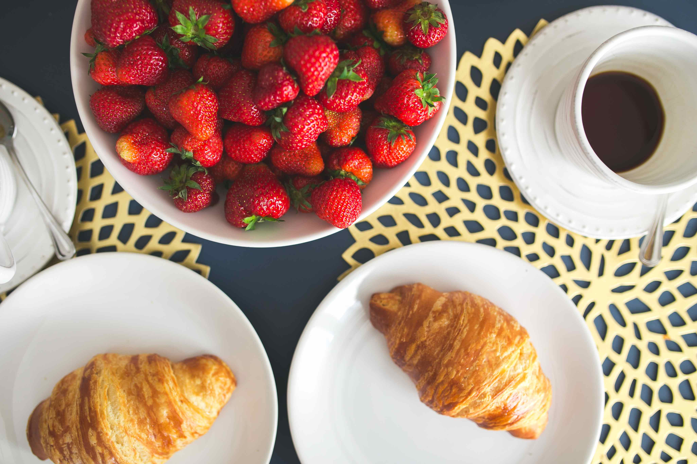
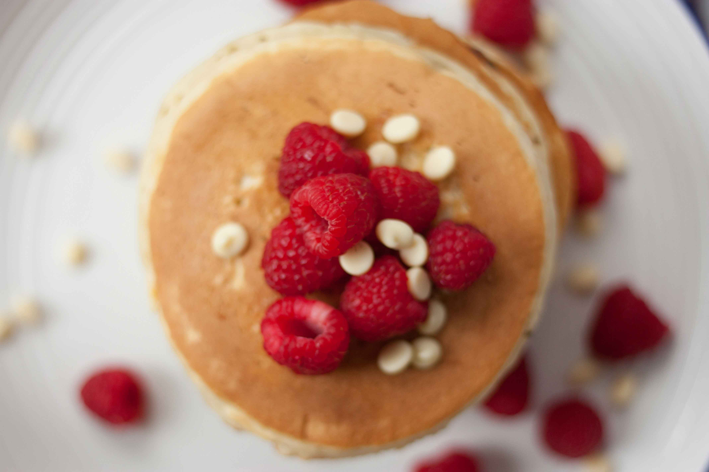

Bedrooms
Superior Room
Lakeside House superior rooms are all ensuite and situated in the main guest house, and boast period Victorian features like high ceilings and carefully selected antique furniture. Tastefully decorated for an elegant and relaxing Kerry stay, our superior rooms are the perfect choice of accommodation in Killarney.
A superior room at Killarney's best kept secret guesthouse is the perfect place to relax and unwind after a busy day shopping in the nearby town centre. Each superior room is spacious making it the ideal setting to relax and unwind before hitting the town- no matter how many shopping bags you might have! You're right at the heart of things at Lakeside House.
Features
- ▶ Luxury, elegant rooms
- ▶ Family rooms available
- ▶ Lovingly sourced antiques
- ▶ Bright and airy, with plenty of space
- ▶ Modern, elegant facilities en suite
- ▶ Award-winning accommodation in Killarney
Breakfast
In the Lakeside House kitchen, we pride ourselves in using only the freshest local produce. Our kitchen team relish sourcing truly wonderful ingredients and turning them into award winning breakfasts. We guarantee you’ll taste the difference.
Standard Room
At Ariel House a standard room means peace, comfort and an excellent night's rest. With 8 standard rooms, all ensuite and located in the modern wing of the house, large windows opening on to the leafy private gardens allow you a breath of fresh air in the heart of the city.
Ariel House standard rooms offer Victorian elegance and five star service, and at a better rate than a standard bed and breakfast in Dublin 4. Minutes from city centre shopping, and close to theatres, the Aviva stadium and the RDS, it's the perfect base to explore Dublin. A quality, luxury Dublin 4 B&B with an award winning breakfast to start the day!
Features
- ▶ Luxury, elegant rooms
- ▶ Family rooms available
- ▶ Lovingly sourced antiques
- ▶ Bright and airy, with plenty of space
- ▶ Modern, elegant facilities en suite
- ▶ Award-winning accommodation in Killarney
Breakfast
Selection of Fruits served with Natural and Fruit Yogurt Wide selection of Cereals and Museli Oatmeal porridge topped with Honey or Maple Syrup Selection of Juices Cheese Board Warm Croissants Selection of Homemade Brown Breads and Toast
Junior Suite
These bright and airy, graceful rooms are the height of elegance in our luxury Dublin B&B. Filled with light, and with several rooms featuring period detail four poster beds, every Junior Suite is ensuite and has its own comfortable lounge area.
Waterford crystal chandeliers cast droplets of light on carefully restored period features of our Junior Suites. Carefully sourced antique furniture and luxurious drapes and fabrics that stay true to the history of the building, while offering the best of modern comfort and quality. Our Junior suites are the most spacious and comfortable rooms at our award-winning, luxury bed and breakfast in Dublin.
Features
- ▶ Luxury, elegant rooms
- ▶ Family rooms available
- ▶ Lovingly sourced antiques
- ▶ Bright and airy, with plenty of space
- ▶ Modern, elegant facilities en suite
- ▶ Award-winning accommodation in Killarney
Breakfast
It’s widely known that we eat with our eyes, so every plate leaving the kitchen must look as good as it tastes.